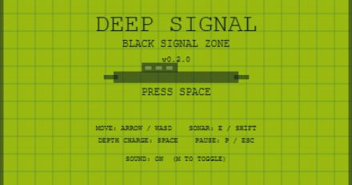

DEEP SIGNAL
Retro deep-sea shooter
深海・空中・宇宙へすすむHAPOMU第1作。v0.5.4でスマホ用ソナーボタンを追加。
HAPPY OMURICE GAMES
家族のアイディアとAI相談から生まれる、ちいさなブラウザゲーム置き場。
Small browser games from a tiny omurice universe.
HAPOMUでいま遊べるブラウザゲームとプロトタイプです。タイルをえらんであそんでね。

Retro deep-sea shooter
深海・空中・宇宙へすすむHAPOMU第1作。v0.5.4でスマホ用ソナーボタンを追加。
Happy Omurice
オムライスにケチャップを描いて完成させる、明るいお絵かきミニゲーム。
Janken Kitchen
駄菓子屋筐体風の3ボタンじゃんけんでOMU COINを集めるゲーム。
Cup Ramen Kun
30秒間フタを押さえて、カップラーメンくんの完成を守るゲーム。
Pudding Pinball
カラメル玉をスプーンフリッパーではじく、左右タップのピンボール風。
Pudding Stack
ぷるぷるプリンをお皿にどんどん積み上げる、バランス落ち物ゲーム。
DEEP SIGNALの過去バージョンを保存している開発アーカイブ。詳細な説明と全リンクは専用ページにまとめています。